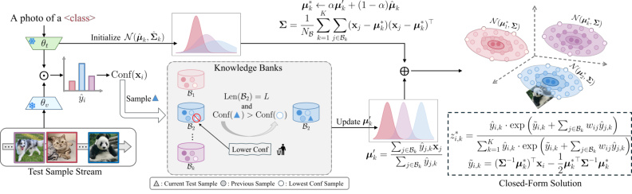
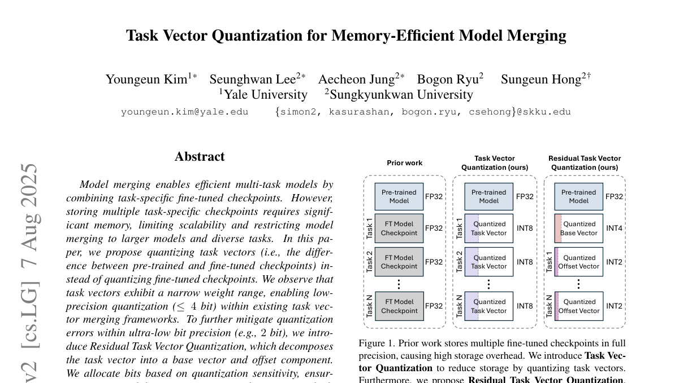
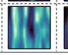

Hello, I'm Youngeun Kim.
I am an Applied Scientist at Amazon, working on efficient multimodal LLM serving. Previously, I was at Meta Reality Labs, working on time-series neural networks for neuromotor-interface AR/VR applications. I received my Ph.D. in Electrical and Computer Engineering from Yale University (2024), M.S. from KAIST (2020), and B.S. from Sogang University (2018).
News
- 2025
- One paper is accepted to NeurIPS 2025.
- July I joined Amazon AWS AI Labs as an Applied Scientist.
- June One paper is accepted to ICCV 2025.
- March One paper is accepted to CVPR 2025.
- 2024
- July Three papers are accepted to ECCV 2024.
- May I joined Meta Reality Labs as a Machine Learning Research Scientist.
- May I successfully defended my thesis — Algorithmic Approaches for Empowering Spike-based Machine Intelligence.
- 2023
- Dec One paper is accepted to NeurIPS 2023.
- May I joined Amazon (AWS AI) as a summer intern.
- May One paper is accepted to Transactions on Machine Learning Research.
- March One paper is accepted to DAC 2023.
- Feb One paper is accepted to AAAI 2023.
Selected Publications
For a comprehensive list, please see my Google Scholar.
2025
-
 Fig. 1Backpropagation-Free Test-Time Adaptation via Probabilistic Gaussian Alignment
-
 Fig. 1Task vector quantization for memory-efficient model merging
-
 Fig. 1Spiking transformer with spatial-temporal attention
2024
-
 Fig. 1
GenQ: Quantization in Low Data Regimes with Generative Synthetic Data
Fig. 1
GenQ: Quantization in Low Data Regimes with Generative Synthetic Data -
 Fig. 1
Open-World Dynamic Prompt and Continual Visual Representation Learning
Fig. 1
Open-World Dynamic Prompt and Continual Visual Representation Learning -
 Fig. 1
One-stage Prompt-based Continual Learning
Fig. 1
One-stage Prompt-based Continual Learning -
 Fig. 1
LoAS: Fully Temporal-Parallel Dataflow for Dual-Sparse Spiking Neural Networks
Fig. 1
LoAS: Fully Temporal-Parallel Dataflow for Dual-Sparse Spiking Neural Networks -
 Fig. 1
Do we really need a large number of visual prompts?
Fig. 1
Do we really need a large number of visual prompts? -
 Fig. 1
When in-memory computing meets spiking neural networks — A perspective on device-circuit-system-and-algorithm co-design
Fig. 1
When in-memory computing meets spiking neural networks — A perspective on device-circuit-system-and-algorithm co-design
2023
-
 Fig. 1
SEENN: Towards Temporal Spiking Early-Exit Neural Networks
Fig. 1
SEENN: Towards Temporal Spiking Early-Exit Neural Networks -
 Fig. 1
Exploring Temporal Information Dynamics in Spiking Neural Networks
Fig. 1
Exploring Temporal Information Dynamics in Spiking Neural Networks
2022
-
 Fig. 1
Exploring Lottery Ticket Hypothesis in Spiking Neural Networks
Fig. 1
Exploring Lottery Ticket Hypothesis in Spiking Neural Networks -
 Fig. 1
Neural architecture search for spiking neural networks
Fig. 1
Neural architecture search for spiking neural networks -
 Fig. 1
Neuromorphic Data Augmentation for Training Spiking Neural Networks
Fig. 1
Neuromorphic Data Augmentation for Training Spiking Neural Networks -
 Fig. 1
PrivateSNN: privacy-preserving spiking neural networks
Fig. 1
PrivateSNN: privacy-preserving spiking neural networks -
 Fig. 1
Rate Coding or Direct Coding: Which One is Better for Accurate, Robust, and Energy-efficient Spiking Neural Networks?
Fig. 1
Rate Coding or Direct Coding: Which One is Better for Accurate, Robust, and Energy-efficient Spiking Neural Networks?
2021
-
 Fig. 1
Domain adaptation without source data
Fig. 1
Domain adaptation without source data -
 Fig. 1
Revisiting batch normalization for training low-latency deep spiking neural networks from scratch
Fig. 1
Revisiting batch normalization for training low-latency deep spiking neural networks from scratch
2020
-
 Fig. 1
Hi-CMD: Hierarchical cross-modality disentanglement for visible-infrared person re-identification
Fig. 1
Hi-CMD: Hierarchical cross-modality disentanglement for visible-infrared person re-identification
Contact
For collaborations, talks, or project inquiries, please reach out via the links below.